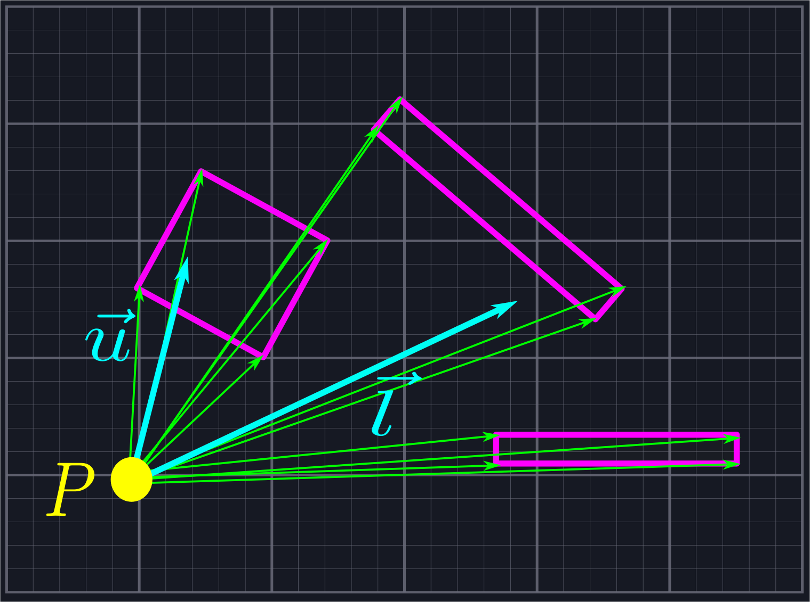
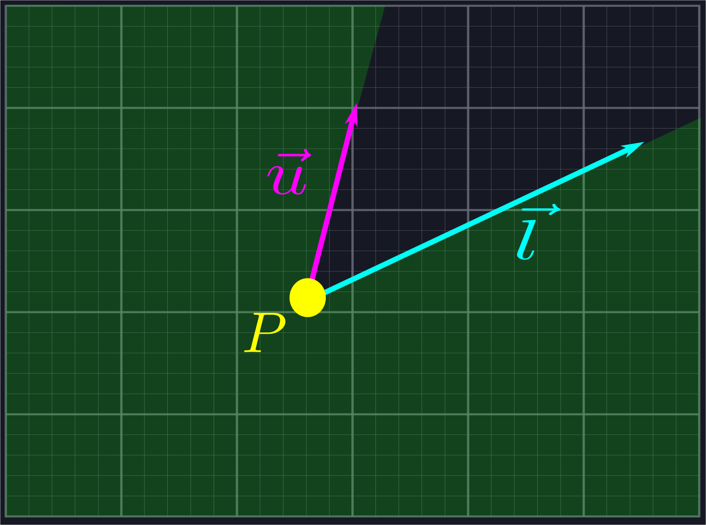
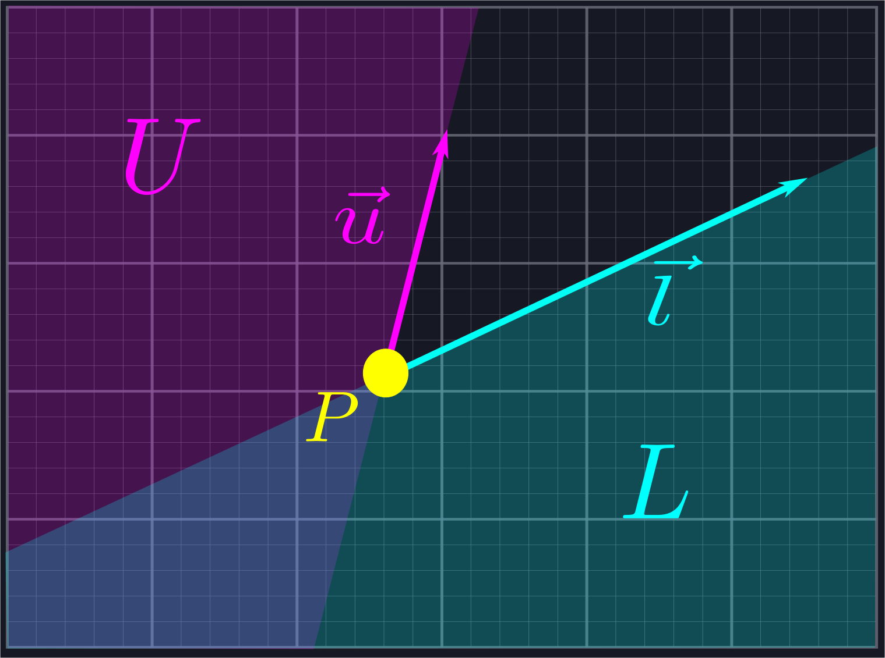

A Trig-less Line of Sight Algorithm in Two Dimensions

It is common when simulating two-dimensional worlds (i.e. for video games) to want to determine line of sight from a specific point \(P\). That is, we'd like to find (a reasonable approximation to) the set of points \(Q\) such that the line \(\vec{PQ}\) does not pass through any solid objects. There are a few great articles that already talk about various approaches to this problem. In particular, the three linked below in the references section were used in various capacities during the formulation of the approach given here.
There are two theoretical complaints one might raise about the existing implementations. Firstly, one method purposefully excludes small slices of area that should be marked as visible near corners of wall segments. Secondly, they often feature (potentially) expensive operations such as (inverse) trigonometric functions or square roots, and the explanations of portions of the algorithm can lack intuition. In practice, these generally run quickly enough for what we need. Just because a given operation is expensive in theory doesn't mean that an alternate approach avoiding it will be faster in practice. Additionally, close enough is generally good enough for most use cases. All that being said, however, it is still worthwhile to see what can be done to address these concerns.
As such, we give an algorithm here which we attempt to explain in straightforward fashion using vectors. It only uses the operations of basic arithmetic: addition, subtraction, multiplication, and a few divisions. This is intended more as an exercise in using vectors rather than any attempts to create production ready code. Familiarity with vector basics such as vector addition, subtraction, and the dot product will be necessary. I recommend that serious projects use one of the algorithms listed in the references, as they are likely to be more battle-tested and stable. Here we do not handle floating point errors with much care, and we could signifcantly improve how we sort and iterate through structures.
The repository contains the code for our algorithm and a simple example application built using the ggez crate. The code samples are written in Rust, however our code should be relatively language-agnostic for anyone with some experience with C-style syntax.
References
Nicky Case: [1]
Sundaram Ramaswamy: [2]
Amit Patel: [3]
The Problem
We are given a point \(P\) in space, an angle \(0<\theta\leq\pi\), and a direction \(\vec{v}\). Our goal is to bound the region that can be seen from \(P\) while looking in the direction of \(\vec{v}\) with field of view \(\theta\). Our eyesight is not bounded by distance. (See [2] for a treatment where the distance is bounded.)

As our over-arching goal is to avoid using complex functions like trig functions or square roots, we will not actually use an angle and viewing direction to represent the problem. Instead, we shall store two vectors which bound the viewing region: \(\vec{l}\) (for "lower") and \(\vec{u}\) (for "upper"), where the angle from \(\vec{l}\) to \(\vec{u}\) is larger than zero and no larger than \(\pi\).
For our algorithm to work, we need \(P\), \(\vec{l}\), \(\vec{u}\), and a list of line segments which represent all of the solid objects we can't see through. How you generate this list will depend on what shapes you are using to define your objects and which objects should and should not block visibility. For the sake of efficiency, it might be worthwhile to store all static line segments (such as those coming from walls) and update only dynamic line segments (such as those coming from characters) each frame.
Solution Outline
We shall split the problem into three discrete steps.
- Send out rays from \(P\) which slice the viewing angle into triangles.
- Sort the rays so that the ray defined via \(\vec{l}\) is the least and they increase by angle towards \(\vec{u}\).
- Determine how far along each ray we should travel and use that to define the triangles whose union is the visible area.
We will cover each step in its own section, first covering the math behind the code then walking through the code itself. We will also provide test code to verify that our math and code are behaving like we expect them to. In general we shall assume that our given vectors are non-zero while we are theory-crafting.
Sending out Rays
As observed in our references, a naive initial approach to the line of sight problem is to simply cast out a large number of rays that slice our viewing area into small sections. We then measure the closest point where each ray intersects a line segment and connect the dots.

For some use cases this approach might be good enough. However, it has a fatal flaw: the only way to improve its accuracy is to send out more and more rays. This increases the amount of computations we need to do drastically.
Fortunately, we can be more circumspect in how we send out rays. Instead of shooting them out indiscriminately, we shall throw one in the direction of \(\vec{l}\), one in the direction of \(\vec{u}\), and one in the direction of each endpoint of each line segment.

While this may seem at first to introduce many more rays than we need, we will be rejecting all of the rays which do not lie within our viewing area, which eliminates a large number of unnecessary calculations. In the above example, eight of the twelve rays would be rejected, leaving us only six (four endpoint rays, \(\vec{l}\), and \(\vec{u}\)) we need to perform computations with. This is the same number of rays as in the naive example shown above, but with much greater accuracy.
To do this, we need to be able to tell whether or not a ray generated in this manner is within our viewing area. If it isn't, then we should not add it to our list. The most straightforward way to do this would be to measure the angle of each ray, and determine if its angle is between the angles of \(\vec{l}\) and \(\vec{u}\). However, our goal is to implement a line of sight algorithm without resorting to expensive operations like arctangent, so we'll handle this exclusion using vectors instead.
Rejecting Rays
We want to use vectors to reject rays which live in the shaded region below.

This region is the combination of two half-planes: the half-plane \(L\), which is all of the points to the right of the line defined by \(\vec{l}\), and the half-plane \(U\), which is all the points to the left of the line defined by \(\vec{u}\).

If a ray lies in either one of these half-planes, then we want to exclude it. We can use normal vectors to do this. A normal vector \(\hat{n}\) of a line defined via a vector \(\vec{n}\) is a vector which is perpendicular to the line, i.e. such that \(\hat{n}\cdot\vec{n} = 0\).
This is analgous to the normal vector of a plane in three dimensions.
Each line has two normal directions: the first, \(\hat{n}_{CCW}\), is obtained by rotating \(\vec{n}\) by \(\frac{\pi}{2}\) in the counterclockwise direction, and the other, \(\hat{n}_{CW}\), is obtained by rotating in the same amount in the clockwise direction. Any vector \(\vec{a}\) to the left of the line defined by \(\vec{n}\) will satisfy \(\vec{a}\cdot\hat{n}_{CCW}>0\), and any vector \(\vec{b}\) to the right of the line defined by \(\vec{n}\) will satisfy \(\vec{b}\cdot\hat{n}_{CW}>0\).

We can use this to reject the rays outside of our desired region. Given a vector \(\vec{r}\) representing one of our potential rays, we will compute \(\hat{u}_{CCW}\cdot\vec{r}\) and \(\hat{l}_{CW}\cdot\vec{r}\). If the first quantity is positive, then we know \(\vec{r}\) is inside \(U\). If the second quantity is positive, then we know \(\vec{r}\) is inside \(L\). In either case, it is not in the region we are looking for and we exclude it from our search.
For this to work, it is important that the angle between \(\vec{l}\) and \(\vec{u}\) is no larger than \(\pi\). However, we can process angles larger than \(\pi\) by applying this process to the complement angle and negating the result.
The careful reader might have an objection to this process: rotating vectors sounds like trigonometry. Fortunately, as we're only rotating by right angles, we can avoid using any trig whatsoever! Given \(\vec{n}=\langle p,q\rangle\), we can compute the normal vectors via \(\hat{n}_{CCW}=\langle-q,p\rangle\) and \(\hat{n}_{CW}=\langle q,-p\rangle\).
The skeptical reader can verify these facts using rotation matrices or by thinking of vectors as complex numbers and performing multiplication by \(i\) and \(-i\) respectively.
Putting This Into Practice
Below is the actual code that handles this ray rejection process. Point is a simple struct with floating point values for its components x and y. We use this struct to represent both points in space and vectors. The ray_between function is a member of this struct which checks if the vector is between the provided values for upper and lower. FLOATING_POINT_ERROR should be thought of as basically zero.
Floating point comparisons are a notoriously fickle issue best avoided by allowing for small amounts of error, which is why we do not compare to
0.0. We have definedFLOATING_POINT_ERRORto be0.0001, although there is no specific rational behind this compared to other arbitrary values like0.001or0.00001.
#![allow(unused)] fn main() { //Assumes the angle from lower to upper is less than pi. Swap lower and upper and negate it for larger angles //Returns false if self is not between lower and upper, true if it is pub fn ray_between(&self, lower: Point, upper: Point) -> bool { //Dot product of upper rotated ccw by pi/2 let upper_component = self.y * upper.x - self.x * upper.y; if upper_component > FLOATING_POINT_ERROR { return false; } //Dot product of lower rotated cw by pi/2 let lower_component = self.x * lower.y - self.y * lower.x; if lower_component > FLOATING_POINT_ERROR { return false; } return true; } }
The only pieces of this code that might cause some confusion are the dot product calculations. Rather than adding overhead by allocating new Points for the normal vectors and calling the dot product function on them, we perform the calculations manually to save time. This is done using the characterization of the normal vectors described in the last paragraph of the previous section.
We write some unit tests to verify that our code is doing what we want.
#![allow(unused)] fn main() { #[test] fn ray_between() { let ray1 = Point { x: 2.5, y: 0.0 }; let ray2 = Point { x: 0.0, y: 1.0 }; let ray3 = Point { x: -1.0, y: 2.0 }; let ray4 = Point { x: -1.0, y: -1.1 }; let ray5 = Point { x: 3.7, y: -2.0 }; let ray6 = Point { x: -2.0, y: 0.0 }; let ray7 = Point { x: 0.0, y: -30.0 }; let ray8 = Point { x: 10.0, y: 1.0 }; assert!(ray8.ray_between(ray1, ray2)); assert!(ray6.ray_between(ray3, ray4)); assert!(ray5.ray_between(ray7, ray1)); assert!(ray4.ray_between(ray3, ray5)); assert!(!ray3.ray_between(ray1, ray2)); assert!(!ray1.ray_between(ray3, ray4)); assert!(!ray2.ray_between(ray7, ray1)); assert!(!ray8.ray_between(ray3, ray5)); } }
We now have everything we need to handle the first section of our line of sight algorithm.
#![allow(unused)] fn main() { use super::space::{Point, Segment, Triangle}; pub fn generate_line_of_sight(location: Point, upper: Point, lower: Point, segments: &Vec<Segment>) -> Vec<Triangle> { let mut rays: Vec<Point> = Vec::new(); rays.push(lower); rays.push(upper); //Collect the rays we need to project for segment in segments.iter() { let ray = segment.start - location; if ray.ray_between(lower, upper) { rays.push(ray); } let ray = segment.end - location; if ray.ray_between(lower, upper) { rays.push(ray); } } //Sort the rays from lower to upper Point::sort_from_angle(&mut rays, lower); // //Actually create the triangles let mut line_of_sight: Vec<Triangle> = Vec::new(); for i in 0..rays.len()-1 { let mut shortest_current = 0.0; let mut shortest_next = 0.0; for segment in segments.iter() { let cast_current = segment.raycast(location, rays[i]); let cast_next = segment.raycast(location, rays[i + 1]); if cast_current.is_some() && cast_next.is_some() && (shortest_current == 0.0 || cast_current.unwrap() < shortest_current) { shortest_current = cast_current.unwrap(); shortest_next = cast_next.unwrap(); } } line_of_sight.push(Triangle::new(location, location + rays[i].scale(shortest_current), location + rays[i + 1].scale(shortest_next))); } return line_of_sight; } }
We create a new vector (Rust's version of a resizable array) to store our rays in, then add upper and lower to it. From here, we iterate over each segment in the vector of Segements which is passed into the function. Segment is a struct simply containing a start Point and an end Point. For each segment, we generate a ray between our location and both endpoints. We use ray_between to only accept rays which are between upper and lower in our collection.
Now we're ready to move on to the second part of our algorithm: sorting this collection of rays by angle.
Potential Improvements
- If your line segments define a sensible collection of closed polygons, then we can skip the second ray portion because each point should be the beginning of some line segment.
- Before adding rays to our collection, we could additionally check to ensure that we are not adding in multiple rays which point in the same direction, as these will be redundant.
Sorting by Angle

At this point, we've created a collection of rays emanating from \(P\), all of which lie within our viewing angle. Our goal will be to find where these rays intersect with the line segments blocking our view, and then connect the adjacent intersection points to create a sequence of triangles which represent our field of view. To do this, we'll need to sort our collection of rays via increasing angle so that we'll know which rays are neighbors.
Sorting by Vector Components
We're going to use dot products to avoid computing angles. Recall that, given two vectors \(\vec{n}\) and \(\vec{m}\), the component of \(\vec{n}\) in the direction of \(\vec{m}\) is given by \(\frac{\vec{n}\cdot\vec{m}}{|\vec{m}|}\).

Consider two of our rays defined by vectors \(\vec{a}\) and \(\vec{b}\), which we know lie between \(\vec{l}\) and \(\vec{u}\). As such, we kow that both the angle \(\theta_a\) between \(\vec{a}\) and \(\vec{l}\) and the angle \(\theta_b\) between \(\vec{b}\) and \(\vec{l}\) does not exceed \(\pi\) since the angle between \(\vec{l}\) and \(\vec{u}\) does not exceed \(\pi\). If all of our rays are defined by unit vectors, i.e. have length \(1\), we know that \(\theta_a\) is larger than \(\theta_b\) if and only if the component of \(\vec{a}\) in the direction of \(\vec{l}\) is smaller than the component of \(\vec{b}\) in the direction of \(\vec{l}\). In other words, we can sort unit vectors by increasing angle if we sort by decreasing components.
We can extend this for viewing angles greater than \(\pi\) by also considering the components along \(\hat{b}_{CCW}\). All of the rays with positive components along the normal vector come first and are sorted as described above. Then we include the rays with negative components along the normal vector, which need to be sorted in reverse. (That is, increasing components along \(\vec{l}\) correspond to increasing angles once we pass the angle \(\pi\).)
Unfortunately, most of the time our rays will not be given by unit vectors. We could compute the unit vectors, but that would require that we compute the inverse square root of the length. We could use the notorious (and notoriously opaque) Fast Inverse Square Root Function, but we shall instead use algebra to come up with a simpler solution for the sake of clarity. Let's write down the inequality we want to check: \[\frac{\vec{a}\cdot\vec{l}}{|\vec{a}||\vec{l}|}>\frac{\vec{b}\cdot\vec{l}}{|\vec{b}||\vec{l}|}\] Here the factors of \(|\vec{a}|\) and \(|\vec{b}|\) in the denominators come from getting the components of the unit vectors in the direction of \(\vec{a}\) and \(\vec{b}\), not of \(\vec{a}\) and \(\vec{b}\) themselves. We can cancel \(|\vec{l}|\), leaving us with \[\frac{\vec{a}\cdot\vec{l}}{|\vec{a}|}>\frac{\vec{b}\cdot\vec{l}}{|\vec{b}|}\] We multiply to rewrite this as \[(\vec{a}\cdot\vec{l})|\vec{b}|>(\vec{b}\cdot\vec{l})|\vec{a}|\] Now, we can apply a common trick: \(n > m\) if and only if \(n|n| > m|m|\). This is because the function \(y=x|x|=sign(x)*x^2\) flips the left half of the parabola \(y=x^2\) upside down to make it an increasing function. Thus, we can now consider the inequality \[(\vec{a}\cdot\vec{l})*|\vec{a}\cdot\vec{l}|*|\vec{b}|^2>(\vec{b}\cdot\vec{l})*|\vec{b}\cdot\vec{l}|*|\vec{a}|^2\] This is something we can represent in code using just addition and multiplication.
Putting This Into Practice
We can calculate these quantities quite easily. Given lower as a Point as well as two Points a and b that we wish to compare, we can write the following:
#![allow(unused)] fn main() { //We want to order by angle from lower, which is the same as reverse ordering by normalized projections along lower //We do some algebra to avoid computing square roots for the normalization, i.e. a dot L/|a|>b dot L/|b| if and only if // a dot L*|a dot L|*|b|^2 > b dot L * |b dot L| * |a|^2 let a_dot_l = lower.dot(a); let lhs = a_dot_l.abs() * a_dot_l * (b.x * b.x + b.y * b.y); let b_dot_l = lower.dot(b); let rhs = b_dot_l.abs() * b_dot_l * (a.x * a.x + a.y * a.y); }
Comparing these two values and using that to sort our list of rays will be language dependent. In Rust, the Vec type includes the convenient sort_by and sort_unstable_by (generally the faster of the two) methods. These allow us to pass a closure which defines an ordering on the elements for us, and the Vec will then sort itself according to that ordering. We'll define an associated method for the Point struct to do just this using the above calculations.
#![allow(unused)] fn main() { //Works so long as all represented angles are between lower and lower+pi pub fn sort_from_angle(rays: &mut Vec<Point>, lower: Point) { rays.sort_unstable_by(|a, b| { //We want to order by angle from lower, which is the same as reverse ordering by normalized projections along lower //We do some algebra to avoid computing square roots for the normalization, i.e. a dot L/|a|>b dot L/|b| if and only if // a dot L*|a dot L|*|b|^2 > b dot L * |b dot L| * |a|^2 let a_dot_l = lower.dot(a); let lhs = a_dot_l.abs() * a_dot_l * (b.x * b.x + b.y * b.y); let b_dot_l = lower.dot(b); let rhs = b_dot_l.abs() * b_dot_l * (a.x * a.x + a.y * a.y); return rhs.partial_cmp(&lhs).unwrap(); }); } }
Here we are given a list of Points which represent our rays and a Point for lower. We declare the list as mutable so that we can sort it. Then we simply call sort_unstable_by with our custom closure. Notice that we return rhs.partial_cmp(&lhs) as opposed to lhs.partial_cmp(&rhs). This is making Rust reverse the order relation between the two values as discussed above.
The
&and.unwrap()in the above code is Rust specific and is not particularly relevant to our algorithm, just necessary minutiae to make the code compile.
We again provide a test to double-check that our code works as expected.
#![allow(unused)] fn main() { #[test] fn angle_sort() { let mut rays = vec![Point { x: 1.0, y: 1.0 }, Point { x: 0.0, y: 1.0 }, Point { x: 2.0, y: 4.0 }, Point { x: -1.0, y: 1.0 }, Point { x: 1.0, y: 0.2 } ]; Point::sort_from_angle(&mut rays, Point { x: 1.0, y: 0.0 }); assert_eq!(rays, vec![Point { x: 1.0, y: 0.2 }, Point { x: 1.0, y: 1.0 }, Point { x: 2.0, y: 4.0 }, Point { x: 0.0, y: 1.0 }, Point { x: -1.0, y: 1.0 }]); } }
Applying this code to our generate_line_of_sight algorithm is as simple as calling our associated sorting function.
#![allow(unused)] fn main() { use super::space::{Point, Segment, Triangle}; pub fn generate_line_of_sight(location: Point, upper: Point, lower: Point, segments: &Vec<Segment>) -> Vec<Triangle> { let mut rays: Vec<Point> = Vec::new(); rays.push(lower); rays.push(upper); //Collect the rays we need to project for segment in segments.iter() { let ray = segment.start - location; if ray.ray_between(lower, upper) { rays.push(ray); } let ray = segment.end - location; if ray.ray_between(lower, upper) { rays.push(ray); } } //Sort the rays from lower to upper Point::sort_from_angle(&mut rays, lower); // //Actually create the triangles let mut line_of_sight: Vec<Triangle> = Vec::new(); for i in 0..rays.len()-1 { let mut shortest_current = 0.0; let mut shortest_next = 0.0; for segment in segments.iter() { let cast_current = segment.raycast(location, rays[i]); let cast_next = segment.raycast(location, rays[i + 1]); if cast_current.is_some() && cast_next.is_some() && (shortest_current == 0.0 || cast_current.unwrap() < shortest_current) { shortest_current = cast_current.unwrap(); shortest_next = cast_next.unwrap(); } } line_of_sight.push(Triangle::new(location, location + rays[i].scale(shortest_current), location + rays[i + 1].scale(shortest_next))); } return line_of_sight; } }
Finally, it is time to calculate where our rays intersect with our walls and form triangles to represent our line of sight.
Potential Improvements
- It would probably be significantly more efficient to sort the rays as they are added to our collection. We have done it afterwards for ease of explanation.
- It may be beneficial to use the mentioned Fast Inverse Square Root Function in place of the above algebra if we do not care about readability.
Finding Intersection Points
Up to this point, we have used the terms vector and ray more or less interchangeably. This has been acceptable because thus far we have only cared about the direction of our rays. Now, however, we shall also need to care about how far our rays travel until they hit an obstacle, so we shall now make the distinction between the two clear. Given a vector \(\vec{v}\) and a point \(P\), the ray defined via \(\vec{v}\) at \(P\) is \[P+t\vec{v},\ 0\leq t<\infty\] In other words, the ray is an "infinite vector" which is obtained by scaling \(\vec{v}\) by every positive real number.
Line segments, on the other hand, are finite pieces of lines contained between two points on the line. Given two points \(S\) (start) and \(E\) (end), we can represent the line segment \(\vec{SE}\) via \[(1-s)S+sE,\ 0\leq s\leq 1\] We want to figure out where (if anywhere) a given ray and a given line segment intersect.
Raycasting
Checking rays for intersections is commonly known as raycasting, although this term is most commonly associated with its use in 3D graphics for determining which objects should be visible to a camera. Nonetheless, the principle is the same. The algebra below is nothing new, but we provide it for the sake of completeness. The algebra is not difficult, but it is symbolically intensive. It may be beneficial for some to skip to the code portion, as that is more readable.
We want to find an intersection point between a ray \(P+t\vec{v}\) and a line segment \((1-s)S+sE\). In other words, we want to compute \(0\leq s\leq 1\) and \(0\leq t<\infty\) such that \[P+t\vec{v}=(1-s)S+sE\] As we have two unknowns, we need two equations to solve for both values. Fortunately, as our vectors are two-dimensional, we can represent this as \[P_x+t\vec{v}_x=(1-s)S_x+sE_x\] and \[P_y+t\vec{v}_y=(1-s)S_y+sE_y\] In other words, we simply set the components equal to one another.
First, we solve for \(t\) in terms of \(s\) in the obvious fashion \[t=\frac{(1-s)S_x+sE_x-P_x}{\vec{v}_x}\text{ if }\vec{v}_x\neq0\] and \[t=\frac{(1-s)S_y+sE_y-P_y}{\vec{v}_y}\text{ if }\vec{v}_y\neq0\] So long as \(\vec{v}\) is not the zero vector, then we will be able to solve for \(t\) given \(s\) using at least one of the above equations.
We plug in one of the above expressions for \(t\) in the other equation. We shall use the \(y\) equation and substitute it into the \(x\) equation. This gives us \[P_x+\frac{(1-s)S_y+sE_y-P_y}{\vec{v}_y}*\vec{v}_x=(1-s)S_x+sE_x\] We multiply through by \(\vec{v}_y\) to eliminate the denominator, yielding \[P_x\vec{v}_y+(1-s)S_y\vec{v}_x+sE_y\vec{v}_x-P_y\vec{v}_x=(1-s)S_x\vec{v}_y+sE_x\vec{v}_y\] Next, we combine the terms with an \(s\) on one side of the equality, and the ones without an \(s\) on the other: \[sE_y\vec{v}_x+sS_x\vec{v}_y-sS_y\vec{v}_x-sE_x\vec{v}_y=S_x\vec{v}_y+P_y\vec{v}_x-P_x\vec{v}_y-S_y\vec{v}_x\] So long as \(E_y\vec{v}_x+S_x\vec{v}_y-S_y\vec{v}_x-E_x\vec{v}_y\neq0\), we can factor out \(s\) from the left hand side and divide by this quantity to obtain \[s=\frac{S_x\vec{v}_y+P_y\vec{v}_x-P_x\vec{v}_y-S_y\vec{v}_x}{E_y\vec{v}_x+S_x\vec{v}_y-S_y\vec{v}_x-E_x\vec{v}_y}\]
Notice that we can rewrite the denominator as \[E_y\vec{v}_x+S_x\vec{v}_y-S_y\vec{v}_x-E_x\vec{v}_y=(E_y-S_y)\vec{v}_x+(E_x-S_x)(-\vec{v}_y)=(E-S)\cdot\hat{v}_{CCW}\] Therefore, the denominator is zero exactly when \(E-S\) and \(\vec{v}\) are parallel. It is safe for us to ignore this case.
We can ignore this case because our line segments are infinitesimally thin. If a line segment parallel to our vision blocks our vision, it only blocks an infinitesimally small line behind it which cannot be represented on screen. If it is part of a larger shape, then the adjacent, non-parallel edges will act with our algorithm to block line of sight for the whole shape.
Solving for \(t\) is then a simple matter of plugging in the new value of \(s\) into our original equations for \(t\). This is relatively straightforward to code.
Putting This Into Practice
Here is our complete raycasting algorithm.
#![allow(unused)] fn main() { pub fn raycast(&self, location: Point, ray: Point) -> Option<f32> { //Ensure the ray can be raycast if ray.x == 0.0 && ray.y == 0.0 { panic!("Cannot raycast the zero vector"); } let rise = self.end.y - self.start.y; let run = self.end.x - self.start.x; let denominator = rise * ray.x - run * ray.y; if denominator.abs() < FLOATING_POINT_ERROR //The ray and the segment are parallel, so there is no intersection to find { return None; } let segment_param = (location.y * ray.x + self.start.x * ray.y - location.x * ray.y - self.start.y * ray.x) / denominator; if segment_param < -FLOATING_POINT_ERROR || segment_param > 1.0 + FLOATING_POINT_ERROR //The lines intersect outside the segment, so there is no intersection { return None; } let ray_param; if ray.x == 0.0 { ray_param = (self.start.y - location.y + rise * segment_param) / ray.y; } else { ray_param = (self.start.x - location.x + run * segment_param) / ray.x; } if ray_param < -FLOATING_POINT_ERROR //The opposite of the ray intersects the segment, not the ray itself { return None; } return Some(ray_param); } }
We have defined raycast as a method on the Segment type. It returns an Option<f32>, which means we return a floating point number representing \(t\) in the above formulation if it exists, and nothing otherwise. First, we check to ensure that the given vector does not try to define the zero vector, as that does not determine a ray. Next, we compute the denominator of the above equation for \(s\). If it is zero, then we do not continue checking as our line segment and our ray are parallel. If it is not zero, then we compute segment_param, or \(s\), using the above equation.
If segment_param is less than \(0\) or greater than \(1\), this means that our ray hits the line through start and end, but not the line segment itself. In other words, there is no intersection. If it is between these two values, we use one of the two equations above to calculate ray_param, or \(t\). If ray_param is negative, then there is no intersection. If it is non-negative, then there is an intersection and we return ray_param.
Notice that having
ray_paramallows us to calculate the point of intersection. We return the parameter rather than the point itself because we need to be able to sort the intersection points by how far away they are.
As before, we provide some automated tests to ensure our code is working properly.
#![allow(unused)] fn main() { #[test] fn raycast() { let segment1 = Segment::new(Point { x: 10.0, y: 0.0 }, Point { x: 0.0, y: 0.0 }); let segment2 = Segment::new(Point { x: 0.0, y: 0.0 }, Point { x: 0.0, y: 10.0 }); let segment3 = Segment::new(Point { x: 1.0, y: 9.0 }, Point { x: 2.0, y: 5.0}); let cast1 = segment1.raycast(Point { x: 1.0, y: -1.0 }, Point { x: 0.0, y: 1.0 }).unwrap(); let cast2 = segment2.raycast(Point { x: 3.0, y: 4.0 }, Point { x: -30.0, y: 0.0 }).unwrap(); let cast3 = segment3.raycast(Point { x: 0.0, y: 9.0 }, Point { x: 1.0, y: -1.0 }).unwrap(); assert_eq!(1.0, cast1); assert_eq!(1.0 / 10.0, cast2); assert_eq!(4.0 / 3.0, cast3); let cast4 = segment1.raycast(Point { x: 2.0, y: 0.0 }, Point { x: 1.0, y: 0.0 }); let cast5 = segment2.raycast(Point { x: 1.0, y: 11.0 }, Point { x: -1.0, y: 0.0 }); let cast6 = segment3.raycast(Point { x: 0.0, y: 9.0 }, Point { x: -1.0, y: 1.0 }); assert!(cast4.is_none()); assert!(cast5.is_none()); assert!(cast6.is_none()); } }
Using Raycasting to Finish Our Algorithm
Finally, we have all of the pieces necessary to finish our line of sight algorithm. Here is the last chunk of code:
#![allow(unused)] fn main() { use super::space::{Point, Segment, Triangle}; pub fn generate_line_of_sight(location: Point, upper: Point, lower: Point, segments: &Vec<Segment>) -> Vec<Triangle> { let mut rays: Vec<Point> = Vec::new(); rays.push(lower); rays.push(upper); //Collect the rays we need to project for segment in segments.iter() { let ray = segment.start - location; if ray.ray_between(lower, upper) { rays.push(ray); } let ray = segment.end - location; if ray.ray_between(lower, upper) { rays.push(ray); } } //Sort the rays from lower to upper Point::sort_from_angle(&mut rays, lower); // //Actually create the triangles let mut line_of_sight: Vec<Triangle> = Vec::new(); for i in 0..rays.len()-1 { let mut shortest_current = 0.0; let mut shortest_next = 0.0; for segment in segments.iter() { let cast_current = segment.raycast(location, rays[i]); let cast_next = segment.raycast(location, rays[i + 1]); if cast_current.is_some() && cast_next.is_some() && (shortest_current == 0.0 || cast_current.unwrap() < shortest_current) { shortest_current = cast_current.unwrap(); shortest_next = cast_next.unwrap(); } } line_of_sight.push(Triangle::new(location, location + rays[i].scale(shortest_current), location + rays[i + 1].scale(shortest_next))); } return line_of_sight; } }
The entire function can be viewed by unhiding the remaining lines with the eye icon above.
We create a new collection to store the triangles that will represent our line of sight. We then loop through our rays, forming a triangle whose edges are the current ray, the next ray, and the closest line segment that they both hit.
In Rust, we usually traverse a
Vectype using an iterator rather than incrementing an index. In this case, though, we want easy access to the next item at every step and we don't want to do anything for the last ray, so we use the index to give ourselves control in a way that is more familiar to non-Rustaceans.
To find the closest line segment they both intersect with, we loop over all of our line segments and find out how far the rays travel with the raycast function. We ignore the line segment if one of the rays does not intersect with it, or if they intersect but it is further away than some previous one. Once we've found the closest line segment, we form our triangle. It is worth noting that because our ray vectors are not unit vectors, the result of raycast will not be the distance away from our point: it will be the distance scaled by the length of the vector. As we only care about comparing whether one line segment is closer than another, though, this suffices.
Finally, we have created a collection of triangles which represents our line of sight.
Here is a low-quality GIF of this algorithm in action.

The example was created using the ggez crate. Interested users can download the example from the repository and build it with cargo. The world is created in the State::new function inside main.rs if you are interested in modifying the example. At this time, the provided code is not a crate because there is nothing that I consider ready to use out of the box. You should use the provided code as inspiration to implement your own algorithm which is optimized for your specific use case.
Potential Improvements
- In our
raycastfunction, it is probably overkill topanicand halt program execution. We could just as easily returnNoneor possibly make the function return aResult<f32>with coherent errors when there is no intersection. - One common technique in line of sight algorithms is to throw out extra rays very close to those which hit endpoints. (For example, as described in [1]) This enables us to only raycast once per line segment as opposed to twice. We have ommitted this technique for the sake of accuracy, but it is likely faster and accurate enough for most use cases.
- Additionally, we may be able to sort the line segments by their angle from our position in such a way that we needn't loop over all of them for each ray. Such a technique is discussed in [3].
Conclusion
Hopefully this has been helpful to some people. Suggestions for improving the descriptions or the code are much appreciated!